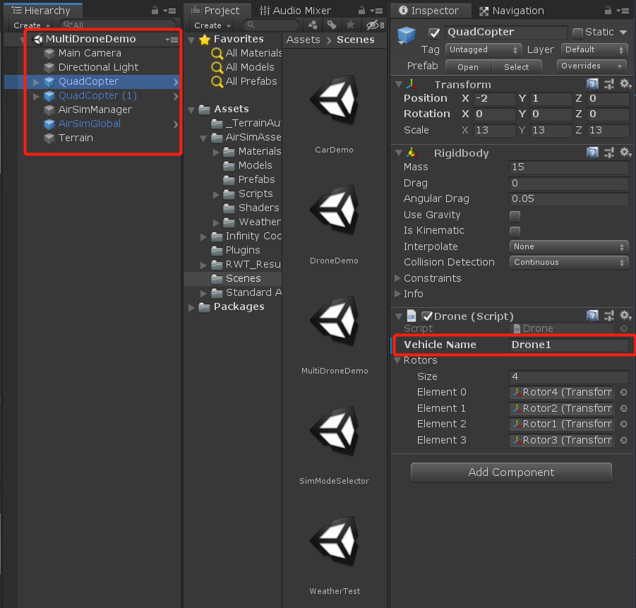
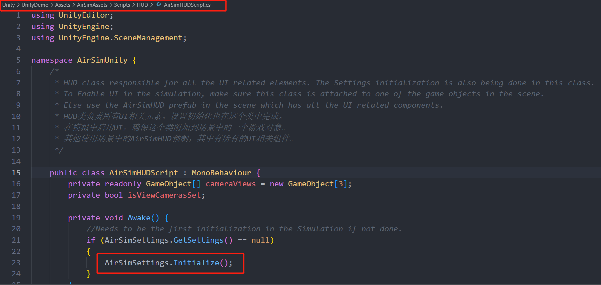
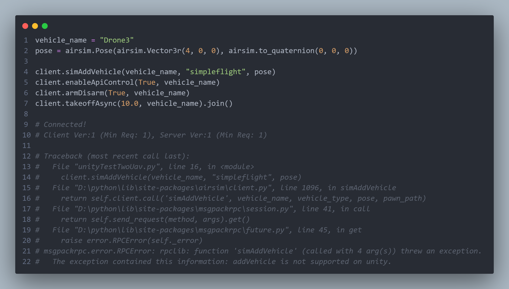

AirSim & Unity 多无人机机
settings
{
"SimMode": "Multirotor",
"SettingsVersion": 1.2,
"Vehicles": {
"Drone1": {
"VehicleType": "SimpleFlight",
"X": 0,
"Y": 0,
"Z": 0,
"Yaw": 0
},
"Drone2": {
"VehicleType": "SimpleFlight",
"X": 2,
"Y": 0,
"Z": 0,
"Yaw": 0
}
}
}
[!TIP] unity 中的多机与 UE 中的不同，UE 中不用提前关联脚本，而 unity 中必须将无人机对象与 Drone 脚本对应

settings 初始化

多机上的 Drone 脚本
/*
* Drone component that is used to control the drone object in the scene. This is based on Vehicle class that is communicating with AirLib.
* 无人机组件，用于控制场景中的无人机对象。这是基于与AirLib通信的Vehicle类。
* This class depends on the AirLib's drone controllers based on FastPhysics engine. The controller is being used based on setting.json file in Documents\AirSim
* 这个类依赖于基于FastPhysics引擎的AirLib无人机控制器。控制器根据设置正在被使用。Documents\AirSim . json文件
* The drone can be controlled either through keyboard or through client api calls.
* 无人机可以通过键盘或通过客户端api调用控制。
* This data is being constantly exchanged between AirLib and Unity through PInvoke delegates.
* 这些数据通过PInvoke委托在AirLib和Unity之间不断交换。
*/
Unity 使用 simAddVehicle API 添加无人机报错
